ICT战队-第4次笔记
[toc]
STP生成树协议
实验一：STP生成树协议配置
- Step1： 网络拓扑
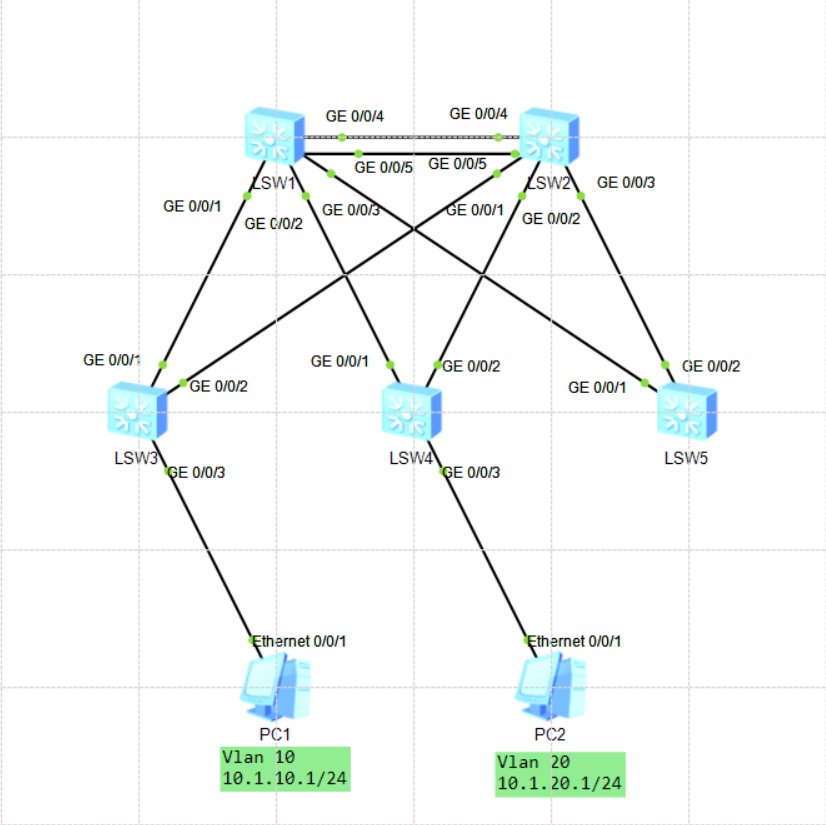
- Step1.5： 配置主机IP
| 主机 | IP地址 | 掩码 | 网关 |
|---|---|---|---|
| PC1 | 10.1.10.1 | 255.255.255.0 | 10.1.10.254 |
| PC2 | 10.1.20.1 | 255.255.255.0 | 10.1.20.254 |
- Step2： 指定根桥交换机LSW2
# todo 每个交换机执行
[Huawei]stp mode rstp # 启用快速生成树RSTP模式
Info: This operation may take a few seconds. Please wait for a moment...done.
# todo 指定LSW2为根桥（比较桥ID：网桥交换机优先级、MAC地址）
[Huawei]stp priority 4096 # 指定交换机优先级
[Huawei]dis stp bri # 查看生成树简要信息
MSTID Port Role STP State Protection
0 GigabitEthernet0/0/1 DESI FORWARDING NONE
0 GigabitEthernet0/0/2 DESI FORWARDING NONE
0 GigabitEthernet0/0/3 DESI FORWARDING NONE
0 GigabitEthernet0/0/4 DESI FORWARDING NONE
0 GigabitEthernet0/0/5 DESI DISCARDING NONE
[Huawei]- Step3： 划分VLAN
# todo 每个交换机批量创建VLAN10、VLAN20
[Huawei]vlan batch 10 20
Info: This operation may take a few seconds. Please wait for a moment...done.
[Huawei]- Step4： 配置交换机接口模式
# 交换机与主机配access，交换机之间配trunk
# todo LSW1
[Huawei]int g0/0/1
[Huawei-GigabitEthernet0/0/1]port link-type trunk
[Huawei-GigabitEthernet0/0/1]port trunk allow-pass vlan all
[Huawei-GigabitEthernet0/0/1]int g0/0/2
[Huawei-GigabitEthernet0/0/2]port link-type trunk
[Huawei-GigabitEthernet0/0/2]port trunk allow-pass vlan all
[Huawei-GigabitEthernet0/0/2]int g0/0/3
[Huawei-GigabitEthernet0/0/3]port link-type trunk
[Huawei-GigabitEthernet0/0/3]port trunk allow-pass vlan all
[Huawei-GigabitEthernet0/0/3]int g0/0/4
[Huawei-GigabitEthernet0/0/4]port link-type trunk
[Huawei-GigabitEthernet0/0/4]port trunk allow-pass vlan all
[Huawei-GigabitEthernet0/0/4]int g0/0/5
[Huawei-GigabitEthernet0/0/5]port link-type trunk
[Huawei-GigabitEthernet0/0/5]port trunk allow-pass vlan all
# todo LSW2
[Huawei]int g0/0/1
[Huawei-GigabitEthernet0/0/1]port link-type trunk
[Huawei-GigabitEthernet0/0/1]port trunk allow-pass vlan all
[Huawei-GigabitEthernet0/0/1]int g0/0/2
[Huawei-GigabitEthernet0/0/2]port link-type trunk
[Huawei-GigabitEthernet0/0/2]port trunk allow-pass vlan all
[Huawei-GigabitEthernet0/0/2]int g0/0/3
[Huawei-GigabitEthernet0/0/3]port link-type trunk
[Huawei-GigabitEthernet0/0/3]port trunk allow-pass vlan all
[Huawei-GigabitEthernet0/0/3]int g0/0/4
[Huawei-GigabitEthernet0/0/4]port link-type trunk
[Huawei-GigabitEthernet0/0/4]port trunk allow-pass vlan all
[Huawei-GigabitEthernet0/0/4]int g0/0/5
[Huawei-GigabitEthernet0/0/5]port link-type trunk
[Huawei-GigabitEthernet0/0/5]port trunk allow-pass vlan all
# todo LSW3
[Huawei]int g0/0/1
[Huawei-GigabitEthernet0/0/1]port link-type trunk
[Huawei-GigabitEthernet0/0/1]port trunk allow-pass vlan all
[Huawei-GigabitEthernet0/0/1]int g0/0/2
[Huawei-GigabitEthernet0/0/2]port link-type trunk
[Huawei-GigabitEthernet0/0/2]port trunk allow-pass vlan all
[Huawei-GigabitEthernet0/0/2]int g0/0/3
[Huawei-GigabitEthernet0/0/3]port link-type access
[Huawei-GigabitEthernet0/0/3]port default vlan 10
# todo LSW4
[Huawei]int g0/0/1
[Huawei-GigabitEthernet0/0/1]port link-type trunk
[Huawei-GigabitEthernet0/0/1]port trunk allow-pass vlan all
[Huawei-GigabitEthernet0/0/1]int g0/0/2
[Huawei-GigabitEthernet0/0/2]port link-type trunk
[Huawei-GigabitEthernet0/0/2]port trunk allow-pass vlan all
[Huawei-GigabitEthernet0/0/2]int g0/0/3
[Huawei-GigabitEthernet0/0/3]port link-type access
[Huawei-GigabitEthernet0/0/3]port default vlan 20- Step5： LSW1配置网关
# todo LSW1配置网关
[Huawei]int vlan 10
[Huawei-Vlanif10]ip add 10.1.10.254 24
[Huawei-Vlanif10]int vlan 20
[Huawei-Vlanif20]ip add 10.1.20.254 24Step6： 两台主机之间可以ping通
Step7： 思考：
- 问题1.数据包转发的路径
- 问题2.该网络的毛病(目标是冗余性)
答1、
PC1->LSW3(g0/0/2)->LSW2(g0/0/4)->LSW1(g0/0/4)->LSW2(g0/0/2)->LSW4(g0/0/3)-PC2
答2、
1.交换机宕掉一个无法主机正常通信
2.无法联外网
3.网关没有冗余性
设置根桥和备份根桥：根桥宕掉后，备份根桥充当根桥
在要设置根桥的交换机上配置：stp root primary，设置比根桥优先级更低(-4096)
在要设置备份根桥的交换机上配置：stp root secondary
# todo 根桥
[Huawei]stp root primary
# todo 备份根桥
[Huawei]stp root secondaryVRRP虚拟路由冗余协议
VRRP：把两个网关逻辑上变成一个网关(网关的冗余性)
网络忌讳：路径不对称
虚拟IP：
LSW1 254 -> 网关250(主)
LSW2 253 -> 网关250(备)
实验二：VRRP简单配置
- Step1：网络拓扑(书接上回:smirk:)

- Step2：LSW2添加IP(为了做虚拟IP)
# todo LSW2添加IP
[Huawei]int vlan 10
[Huawei-Vlanif10]ip add 10.1.10.253 24
[Huawei-Vlanif10]int vlan 20
[Huawei-Vlanif20]ip add 10.1.20.253 24- Step3：配置虚拟IP
# todo LSW1、LSW2配置虚拟IP
[Huawei]int vlan 10
[Huawei-Vlanif10]vrrp vrid 10 virtual-ip 10.1.10.250
[Huawei-Vlanif10]int vlan 20
[Huawei-Vlanif20]vrrp vrid 20 virtual-ip 10.1.20.250
[Huawei-Vlanif20]1.vrid随意，为了好认，取特殊值
2.VRRP可以用物理接口作为虚拟IP(不推荐，原因：物理接口作为虚拟IP问题：部分链路段掉之后，主备无法切换)
- Step3.5：修改主机网关
| 主机 | IP地址 | 掩码 | 网关 |
|---|---|---|---|
| PC1 | 10.1.10.1 | 255.255.255.0 | 10.1.10.250 |
| PC2 | 10.1.20.1 | 255.255.255.0 | 10.1.20.250 |
- Step4：主机测试连通性
实验三：VRRP其他配置
Step5.0： 测试(以下实验基于上面的网络拓扑的小实验)
Step5.1： 通过修改路由器优先级更改主路由器
VRRP
VRID最大255个虚拟MAC：00-00-5E-00-01-XX，XX对应vrid号
成为主路由器的条件：
1.比较优先级，默认100，越大越优先，有抢占特性
2.比较物理接口IP大小，越大越优先，没有抢占特性
# todo 修改之前查看路由器VRRP信息
[Huawei]dis vrrp
# todo 选择状态为Backup的路由器，修改其优先级，使其成为Master
[Huawei]int vlan 10
[Huawei-Vlanif10]vrrp vrid 10 priority 101- Step5.2： 查看各路由器VRRP信息
# todo 查看各路由器VRRP信息，可以看到路由器状态改变
[Huawei]dis vrrp- Step5.3： 关闭抢占特性
# todo 关闭抢占特性
[Huawei]int vlan 10
[Huawei-Vlanif10]vrrp vrid 10 preempt-mode disable- Step5.4： 设置Hello时间间隔
# todo 设置备份Master时间间隔
[Huawei]int vlan 20
[Huawei-Vlanif20]vrrp vrid 20 timer advertise 1 # 命令用来配置备份组中Master发送VRRP报文的时间间隔为1s- Step5.5： 修改VLAN状态
# todo 关掉
[Huawei]int vlan 20
[Huawei-Vlanif20]shutdown # 状态：Backup -> Initialize
# todo 开启
[Huawei-Vlanif20]undo shutdown # 状态：Initialize -> Backup- Step5.6： 观察修改主路由器VLAN状态后，主机连通性情况
# todo PC2
PC>ping 10.1.20.250 -t # 持续ping目的IP地址# todo 主路由器LSW1
[Huawei]int vlan 20
[Huawei-Vlanif20]shutdown # 状态：Master -> Initialize# todo PC2会短暂出现：
Request timeout!解释：主Maste路由器线路断掉之后，备Backup路由器马上成为主Master路由器
逻辑链路聚合
1.最多可聚合8个端口
2.所有聚合端口link-mode必须一致
3.link-mode trunk下确保trunk允许VLAN必须一致
5.接口类型必须保持一致
6.加入聚合端口之前不能有任何配置
实验四：逻辑链路聚合
- Step1：网络拓扑
# todo LSW2配置
[Huawei]int Eth-Trunk 1 # 建立汇聚端口
[Huawei]clear configuration int g0/0/4 # 清除接口配置
Warning: All configurations of the interface will be cleared, and its state will
be shutdown. Continue? [Y/N] :y
Info: Total execute 2 command(s), 2 successful, 0 failed.
[Huawei]
[Huawei]clear configuration int g0/0/5 # 清除接口配置
Warning: All configurations of the interface will be cleared, and its state will
be shutdown. Continue? [Y/N] :y
Info: Total execute 2 command(s), 2 successful, 0 failed.
[Huawei]
[Huawei]int g0/0/4
[Huawei-GigabitEthernet0/0/4]un shut # 开启链路
[Huawei-GigabitEthernet0/0/4]eth-trunk 1 # 将该端口g0/0/4加入聚合接口eth-trunk 1
Info: This operation may take a few seconds. Please wait for a moment...done.
[Huawei-GigabitEthernet0/0/4]
[Huawei-GigabitEthernet0/0/4]int g0/0/5
[Huawei-GigabitEthernet0/0/5]un shut # 开启链路
[Huawei-GigabitEthernet0/0/5]eth-trunk 1 # 将该端口g0/0/5加入聚合接口eth-trunk 1
Info: This operation may take a few seconds. Please wait for a moment...done.
[Huawei-GigabitEthernet0/0/5]
# todo LSW1配置
[Huawei]int Eth-Trunk 1 # 建立汇聚端口
[Huawei]clear configuration int g0/0/4 # 清除接口配置
Warning: All configurations of the interface will be cleared, and its state will
be shutdown. Continue? [Y/N] :y
Info: Total execute 2 command(s), 2 successful, 0 failed.
[Huawei]
[Huawei]clear configuration int g0/0/5 # 清除接口配置
Warning: All configurations of the interface will be cleared, and its state will
be shutdown. Continue? [Y/N] :y
Info: Total execute 2 command(s), 2 successful, 0 failed.
[Huawei]
[Huawei]int g0/0/4
[Huawei-GigabitEthernet0/0/4]un shut # 开启链路
[Huawei-GigabitEthernet0/0/4]eth-trunk 1 # 将该端口g0/0/4加入聚合接口eth-trunk 1
Info: This operation may take a few seconds. Please wait for a moment...done.
[Huawei-GigabitEthernet0/0/4]
[Huawei-GigabitEthernet0/0/4]int g0/0/5
[Huawei-GigabitEthernet0/0/5]un shut # 开启链路
[Huawei-GigabitEthernet0/0/5]eth-trunk 1 # 将该端口g0/0/5加入聚合接口eth-trunk 1
Info: This operation may take a few seconds. Please wait for a moment...done.
[Huawei-GigabitEthernet0/0/5]
# todo 检查逻辑链路聚合
[Huawei-GigabitEthernet0/0/5]dis eth-trunk 1
Eth-Trunk1's state information is:
WorkingMode: NORMAL Hash arithmetic: According to SIP-XOR-DIP
Least Active-linknumber: 1 Max Bandwidth-affected-linknumber: 8
Operate status: up Number Of Up Port In Trunk: 2
--------------------------------------------------------------------------------
PortName Status Weight
GigabitEthernet0/0/4 Up 1
GigabitEthernet0/0/5 Up 1 # todo LSW2配置
[Huawei]int Eth-Trunk 1
[Huawei-Eth-Trunk1]port link-type trunk
[Huawei-Eth-Trunk1]port trunk allow-pass vlan all
[Huawei-Eth-Trunk1]dis vlan
The total number of vlans is : 3
--------------------------------------------------------------------------------
U: Up; D: Down; TG: Tagged; UT: Untagged;
MP: Vlan-mapping; ST: Vlan-stacking;
#: ProtocolTransparent-vlan; *: Management-vlan;
--------------------------------------------------------------------------------
VID Type Ports
--------------------------------------------------------------------------------
1 common UT:GE0/0/1(U) GE0/0/2(U) GE0/0/3(U) GE0/0/6(D)
GE0/0/7(D) GE0/0/8(D) GE0/0/9(D) GE0/0/10(D)
GE0/0/11(D) GE0/0/12(D) GE0/0/13(D) GE0/0/14(D)
GE0/0/15(D) GE0/0/16(D) GE0/0/17(D) GE0/0/18(D)
GE0/0/19(D) GE0/0/20(D) GE0/0/21(D) GE0/0/22(D)
GE0/0/23(D) GE0/0/24(D) Eth-Trunk1(U) Eth-Trunk11(D)
10 common TG:GE0/0/1(U) GE0/0/2(U) GE0/0/3(U) Eth-Trunk1(U)
20 common TG:GE0/0/1(U) GE0/0/2(U) GE0/0/3(U) Eth-Trunk1(U)
VID Status Property MAC-LRN Statistics Description
--------------------------------------------------------------------------------
1 enable default enable disable VLAN 0001
10 enable default enable disable VLAN 0010
20 enable default enable disable VLAN 0020
[Huawei-Eth-Trunk1]协商：······
交换机端口安全技术
实验五：端口隔离
应用场景：酒店、宿舍
端口隔离：做了端口隔离的端口之间互相通信，做了和没做的可以通信
- Step1：网络拓扑
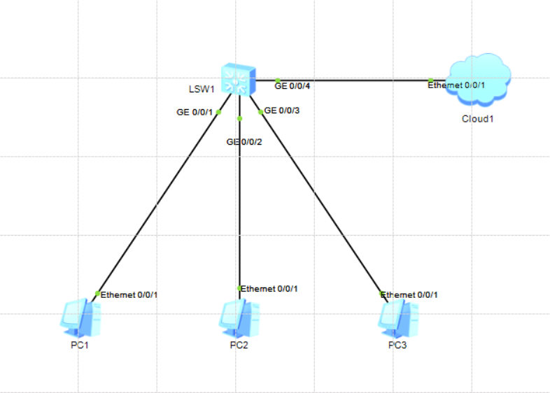
- Step2：云和主机的配置
云配置：
绑定信息：1.UDP、2.VMware···IP: 192.168.126.1
端口类型：Ethernet
入端口号：1
出端口号：2
双向通道：√
计算机配置：DHCP
- Step3：做端口隔离
隔离组中的用户之间不能通信，只能和上行端口进行通信。
# todo 交换机做端口隔离
[Huawei]int g0/0/1
[Huawei-GigabitEthernet0/0/1]port-isolate enable
[Huawei-GigabitEthernet0/0/1]int g0/0/2
[Huawei-GigabitEthernet0/0/2]port-isolate enable- Step5.0：搞事：在PC3抓PC1跟PC2通信的数据包
首先要关掉上面配置的端口隔离：
# todo 关闭端口隔离
[Huawei]int g0/0/2
[Huawei-GigabitEthernet0/0/2]undo mac-add dynamic
# todo 快速手动清除交换机MAC地址表
[Huawei]undo mac-address
# todo 在MAC地址表中查找指定的MAC地址
[Huawei]dis mac-address | include 4491- Step5.1：攻击机MAC地址泛洪
攻击机使用MAC地址泛洪：
┌──(kali㉿kali)-[~]
└─$ sudo macof此后，交换机MAC地址表被垃圾MAC填满，所以交换机会泛洪数据帧，即广播，所以实现了抓包的效果。
- Step5.2：抓包
在PC3的线路上开始抓包，然后用PC1 ping PC2，在wireshark上面可以看到ping使用的ICMP报文信息。
此时，如果交换机使用telnet明文登录方式，那不寄了嘛:sweat_smile:
- Step5.3：交换机配置Telnet明文远程登录
# todo 交换机配IP
[Huawei]int vlan 1
[Huawei-Vlanif1]ip add 192.168.126.24 24
[Huawei-Vlanif1]
# todo 交换机配置telnet
[Huawei]telnet server enable
Info: The Telnet server has been enabled.
[Huawei]user-interface vty 0 4
[Huawei-ui-vty0-4]set authentication password cipher 123456- Step5.4：远程登录交换机
此时，用kali远程登录交换机时，在登录线路上开始抓包，就能看见使用telnet登录。寄！:grimacing:
实验六：端口安全
以上是攻击，以下是防御。MAC地址表分为：
静态MAC地址表：手工绑定，优先级高于动态MAC地址表
动态MAC地址表：交换机收到数据帧后，将源MAC地址学习到MAC地址表中
黑洞MAC地址表：手工绑定或自动学习，用于丢弃指定MAC地址
- Step6：端口安全配置
端口安全：控制一个端口能收发的MAC地址数量
# todo 交换机配置端口安全
[Huawei]int g0/0/4
[Huawei-GigabitEthernet0/0/4]port-security enable # 开启端口安全
[Huawei-GigabitEthernet0/0/4]port-security max-mac-num 1 # 接口最多学习多少地址，如果连输出端，那么学习最多一个就行
[Huawei-GigabitEthernet0/0/4]port-security mac-address sticky # 端口安全地址通过**自动学习**获取，即自动学习合法的MAC地址
[Huawei-GigabitEthernet0/0/4]port-security protect-action shutdown # 惩罚：把端口down掉
[Huawei-GigabitEthernet0/0/4]
[Huawei-GigabitEthernet0/0/4]int g0/0/3
[Huawei-GigabitEthernet0/0/3]port-security enable # 开启端口安全
[Huawei-GigabitEthernet0/0/3]port-security max-mac-num 1 # 接口最多学习多少地址，如果连输出端，那么学习最多一个就行
[Huawei-GigabitEthernet0/0/3]port-security mac-address sticky # 端口安全地址通过**自动学习**获取，即自动学习合法的MAC地址
[Huawei-GigabitEthernet0/0/3]port-security protect-action shutdown # 惩罚：把端口down掉
[Huawei-GigabitEthernet0/0/3]- Step6.5：观察
首先，会发现，连接kali的端口已经被交换机down掉了（坏事干太多了:sweat_smile:）
然后，使用PC3主机ping其他主机，交换机就会学习到PC3的MAC地址
- Step7：测试
在拓扑中拉一台主机PC4出来，配置跟PC3一摸一样的地址，然后删除原PC3连线，跟PC4连线，如图所示：
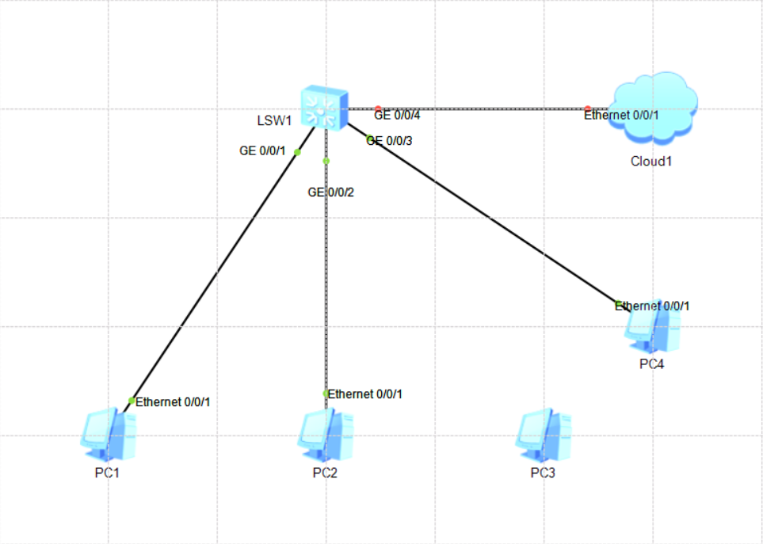
此时，因为PC4不发送数据包，交换机无法判断该接口的主机是否是原主机，所以PC4 ping任意其他主机(ping不同)，之后该端口就down掉了(等30s端口老化时间)：
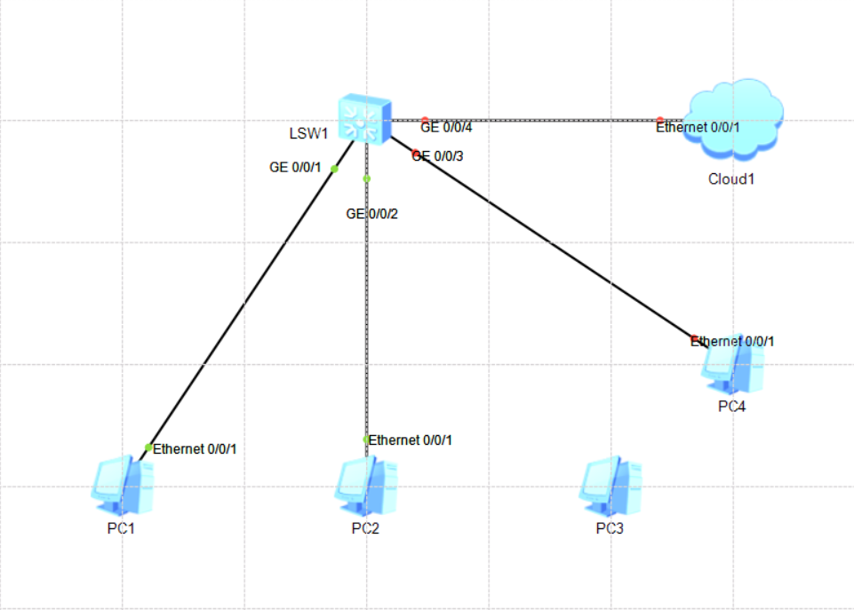
实验七：MAC地址防漂移(无实验)
MAC地址漂移：在一个接口学习到的MAC
地址在通一个VLAN中的其他接口上也被学习到，这样后学习的MAC地址就会覆盖先学习到的MAC地址信息（出接口频繁变动），这种情况多数为出现环路的时候发生，所以这个功能也可以用来排查和解决环路问题。
MAC地址防止漂移功能原理：在接口上配置优先级，优先级高的接口学习到的MAC地址不会在同VLAN的优先级低的其他接口上被学习到，如果优先级一样，那么可以配置不允许相同优先级的接口学习到同一个MAC地址。
# todo MAC地址防止漂移配置
[Huawei]mac-address flapping detection # 全局开启MAC漂移检测
[Huawei]int g0/0/2
[Huawei-GigabitEthernet0/0/2]mac-learning priority 3 # 配置g0/0/0接口优先级为3，默认为0
[Huawei-GigabitEthernet0/0/2]mac-address flapping trigger error-down # 接口发生MAC地址漂移后关闭
[Huawei]int g0/0/3
[Huawei-GigabitEthernet0/0/3]mac-address flapping trigger error-down # 接口发生MAC地址漂移后关闭
配置完成后，当g0/0/2的MAC地址漂移到g0/0/后，g0/0/3端口将被关闭实验八：DHCP欺骗(DHCP Spoofing)
- Step1：网络拓扑

拓扑图跟上面的一样，但是不要配置端口安全，配了的话把端口安全配置全部删掉。
一般主机连接外网，都能通过DHCP获取IP地址
- Step2：使用攻击机kali耗尽DHCP的IP地址池资源
dhcpstarv：（DHCP饿死攻击）指定一个接口，就会把局域网里面的DHCP地址全部干掉，相当于不断获取IP地址，把IP资源耗尽。
┌──(kali㉿kali)-[~]
└─$ dhcpstarv -i eth0 -e 192.168.126.131- Step3：检查主机IP地址
让各PC重新应用DHCP，然后就无法分配到IP地址。
- Step4：攻击机kali使用DNS欺骗
通过Ethercap软件模拟DHCP服务器
打开Ettercap -> √ -> DHCP Spoofing -> 配置如下 -> OK

- Step5：检查主机IP地址
让各PC重新应用DHCP，然后可以看到主机分配到了我们自定义的IP地址。
Ettercap显示：
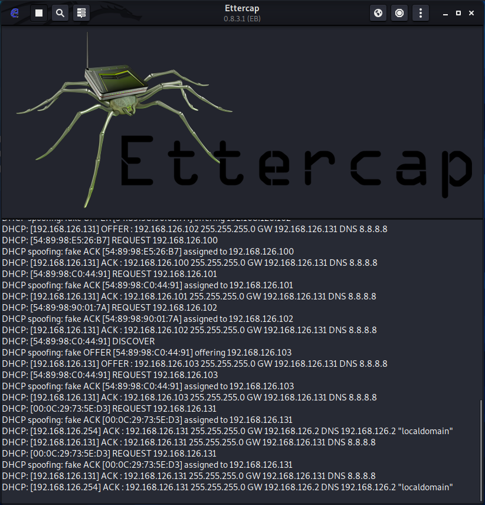
其中一台主机的配置：
实验九：DHCP窥探(DHCP snooping)
- Step1：网络拓扑
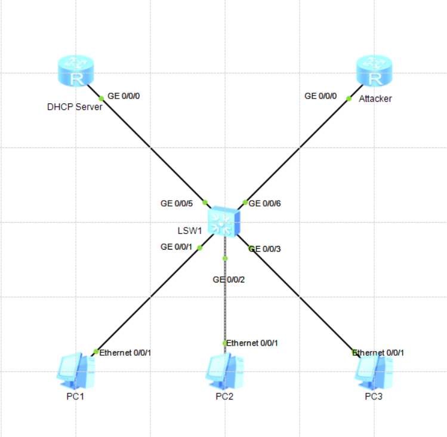
- Step2：配置DHCP服务器和攻击DHCP
# todo DHCP Server
[Huawei]dhcp en
Info: The operation may take a few seconds. Please wait for a moment.done.
[Huawei]int g0/0/0
[Huawei-GigabitEthernet0/0/0]ip add 192.168.126.1 24
[Huawei-GigabitEthernet0/0/0]dhcp select interface
[Huawei-GigabitEthernet0/0/0]
# todo Attacker
[Huawei]dhcp en
Info: The operation may take a few seconds. Please wait for a moment.done.
[Huawei]ip pool p1
Info: It's successful to create an IP address pool.
[Huawei-ip-pool-p1]network 192.168.99.0 mask 24
[Huawei-ip-pool-p1]gateway-list 192.168.99.1
[Huawei-ip-pool-p1]int g0/0/0
[Huawei-GigabitEthernet0/0/0]ip add 192.168.99.1 24
[Huawei-GigabitEthernet0/0/0]dhcp select global - Step2.5：查看主机IP地址
主机获取两个DHCP服务器IP地址的概率五五开。
- Step3：交换机开启DHCP Snooping
[Huawei]dhcp enable
Info: The operation may take a few seconds. Please wait for a moment.done.
[Huawei]dhcp snooping enable # 全局开启DHCP snooping
[Huawei]dhcp snooping enable vlan 1 # 针对VLAN开启DHCP snooping- 交换机全局开启DHCP Snoop ing后，需要再在VLAN中开启
- DHCP分配地址过程中，DCHP发送Offer和ACK报文
- 交换机开启Spoofing，所有端口设置为不信任端口，即不接受Offer和ACK
- 此时，主机无法获取IP地址，因为交换机做了DHCP窥探（DHCP snooping）
- 所以，再单独将某个端口设置为信任端口，就可以从这个端口接收Offer和ACk，主机也可以从信任端口的DHCP服务器获取IP地址
- Step4：交换机设置信任端口
无差别地将VLAN下的端口设置为untrust(默认)
# todo 设置信任端口
[Huawei]int g0/0/5
[Huawei-GigabitEthernet0/0/5]dhcp snooping trusted # 将端口设置为信任
# todo 设置端口能分配的最大IP，防止DHCP饿死攻击
[Huawei-GigabitEthernet0/0/5]int g0/0/1
[Huawei-GigabitEthernet0/0/1]dhcp snooping max-user-number 1 # 一个端口分一个IP，防止DHCP饿死攻击此时，发现，主机可以获取DHCP server地址池地IP地址，不会从Attacker获取IP地址
- Step5：防止IP地址冲突
首先，为了出现地址冲突，手动将PC1配置改成和PC3一样的配置。
为了对比配置命令的效果，先用PC1 ping其网关：
ping 192.168.126.1然后，在上面已经做好DHCP Snooping的基础上，配置IP源防护(必须在配置DHCP Snooping之后)
[Huawei]int g0/0/1 # 进入需要配置的端口
[Huawei-GigabitEthernet0/0/1]ip source check user-bind enable # 配置IP源防护然后，主机就无法ping通其网关了。
源IP防护相关配置：
华为ip源防护arp防护dhcp snooping 和端口保护
CISCO交换机配置DHCP监听、IP源防护和动态ARP检测
IP 源防护
AAA认证
AAA是Authentication(认证)、Authorization(授权)、Accounting(计费)的简称。
telnet和ssh基于设备本地用户名和密码进行认证。如果设备单一，没问题，但是设备有成百上千台，这种配置方式就不合理：安全风险、麻烦。所以，可以把所有的用户放入服务器。在企业里头，大型网络都是AAA认证。
实验十：AAA配置——搭建AAA认证服务器
- Step1：网络拓扑
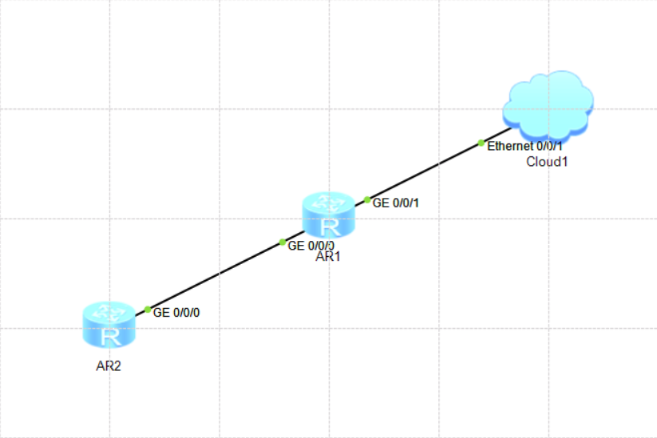
- Step2：配置路由器
AR1配置Telnet，Telnet认证基于AAA服务器做认证。
# todo 路由器AR1通过DHCP获取IP
[Huawei]dhcp en
Info: The operation may take a few seconds. Please wait for a moment.done.
[Huawei]int g0/0/1
[Huawei-GigabitEthernet0/0/1]ip add dhcp-alloc
[Huawei-GigabitEthernet0/0/1]- Step3：搭建AAA认证服务器
搭建AAA认证服务器：思科的ACS（操作系统）安装ACS虚拟机步骤：视频从02:23:17开始
# todo 安装虚拟机（没截图，凑合看）
localhost login:setup
Enter hostname[]：dcm # 主机名：大聪明
Enter IP address[]：192.168.126.44 # 网段一致即可
Enter IP network[]：255.255.255.0 # 掩码，没啥好说的
Enter IP default gateway[]：192.168.126.2 # 网关，没啥好说的
Enter default DNS domain[]：ct.com # 这个随便写个域名
Enter primary nameserver[]：8.8.8.8 # DNS服务器地址
Add seconary nameserver? Y/N [N]：n # 是否添加第二个DNS服务器地址
Enter NTP server[time.nist.gov]： # NTP时间同步服务器
Add seconary NTP? Y/N [N]：n
Enter system timezone[UTC]：
Enter SSH service? Y/N [N]：y
Enter username[admin]：
Enter password：Dcm123
Enter password again：Dcm123 # 至少6位,英文及数字组合
Nameserver ping failed. Retried? Y/N [Y]：n等ACS安装完成之后，随便测试几条命令：
# todo 测试命令
dcm/admin# show ip route
dcm/admin# - Step3：进入AAA认证服务器
-> 在浏览器中输入https://192.168.126.44
-> 高级
-> 继续前往https://192.168.126.44（没截图，凑合看）
-> 服务器登录界面：输入用户名、密码
-> 输入新密码
-> 使用新密码登录
-> 授权
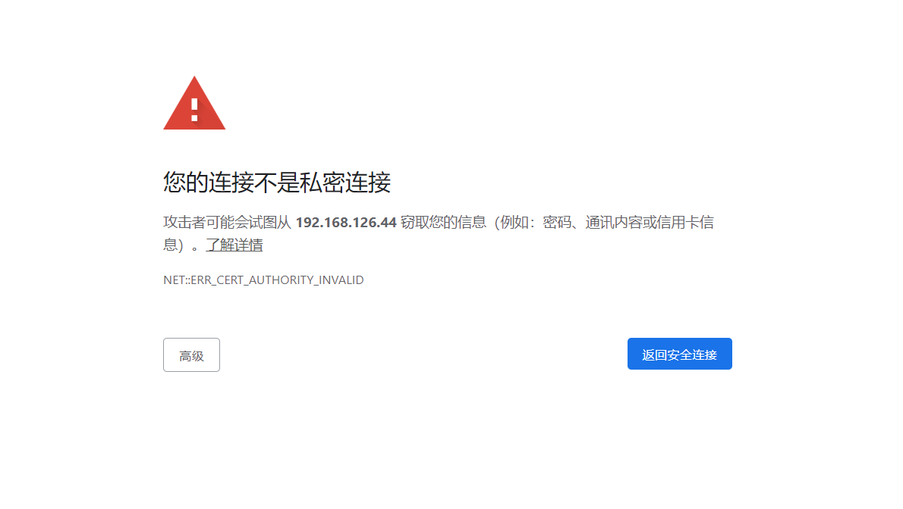

默认账号：acsadmin
默认密码：default
第一次进入会被要求重置密码，重设密码后直接登录即可。

-> 选择文件：acs5.6_base_57class.cn
-> install
-> 然后就来到这个界面
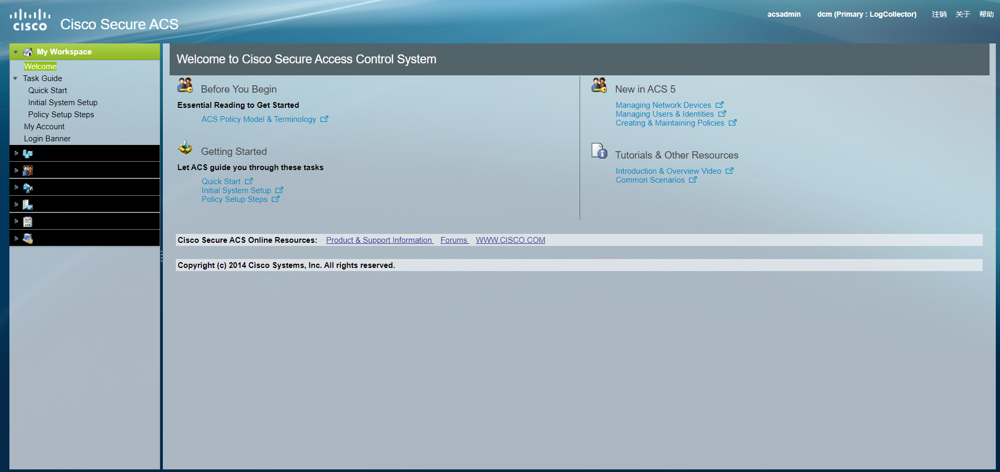
-> 查看base导入情况：
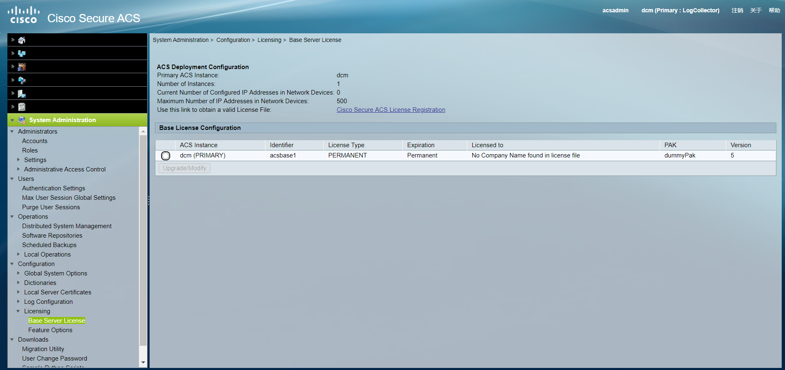
-> 已经导入
-> 导入feature：
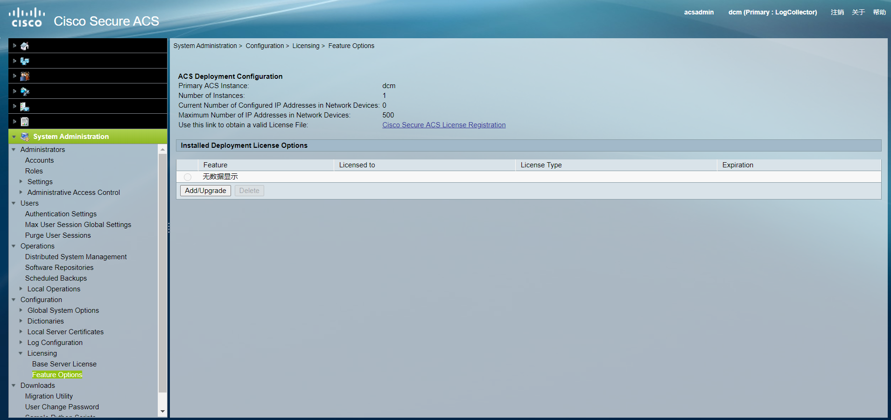
-> Add/Upgrade
-> 选择文件：acs5.6_feature_57class.cn
-> Submit
-> 到此为止，AAA服务器搭建完成！
- Step4：次日的内容：移步[何明泽_第5次笔记]
AAA认证配置：
华为AAA认证详解
Windows下AAA服务器的搭建及身份认证！
MAC地址表管理命令
1.配置MAC地址表
<Huawei>dis mac-address
2.配置静态MAC地址表
[Huawei]mac-address static 5489-98C0-7E34 g0/0/1 vlan 1 # 将MAC地址绑定到接口g0/0/1在vlan1中有效
3.配置黑洞MAC地址表
[Huawei]mac-address black-hole 5489-98C0-7E34 vlan 1 # 在VLAN1中收到源或目的问此MAC时，丢弃帧
4.禁止端口学习MAC地址，可以在端口或者VLAN中禁止MAC地址学习功能
[Huawei-GigabitEthernet0/0/1]mac-address learning disable action discard
进制学习MAC地址，并将收到的所有帧丢弃，也可以在VLAN中配置
[Huawei-GigabitEthernet0/0/1]mac-address learning disable action forward
禁止学习MAC地址，但是将收到帧以泛洪方式转发（交换机对于未知目的MAC地址转发原理），也可以在VLAN中配置
5.限制MAC地址学习数量，可以端口或者VLAN配置
[Huawei-GigabitEthernet0/0/1]mac-limit maximum 9 alarm enable
交换机限制MAC地址学习数量为9个，并在超出数量时发出告警，超过的MAC数量将无法被端口学习到，但是可以通过泛洪转发
6.配置端口安全动态MAC地址
此功能将动态学习到MAC地址设置安全属性，其他没有被学习的非安全属性的MAC地址的帧将被端口丢弃
[Huawei-GigabitEthernet0/0/1]port-security max-max-num 1限制安全MAC地址最大数量为1个，默认为1
[Huawei-GigabitEthernet0/0/1]port-security protect-action ?配置其他非安全MAC数据帧的处理动作
protect Discard packets 丢弃，不产生告警信息
restrict Discardpackets and warning 丢弃，产生告警信息
shutdown Shutdown 丢弃，并将端口shutdown
[Huawei-GigabitEthernet0/0/1]port-security aging-time 300配置安全MAC地址的老化时间为300s，默认不老化
在端口动态MAC地址中，配置如上的话，在g0/0/1端口学习到的第一个MAC地址设置为安全MAC地址，
此外其他MAC地址在接入端口的话都不予转发，在300s后刷新安全MAC地址表，并重新学习安全MAC地址，
哪个MAC地址先到交换机，交换机就先学到哪个MAC地址就将其设置为安全地址，
但是交换机重启后，安全MAC地址就会被清空重新学习。protect-action保护行为：
protect：只接受合法的，丢弃所有非法的
restrict：只接受合法的，丢弃所有非法的，并且发一个warning，发SNMP告警信息报文
shutdown：断开
*down管理员关掉的接口
违规导致的shutdown，只能先shutdown再undo shutdown打开
设置一个延迟时间，down掉多少时间后恢复，